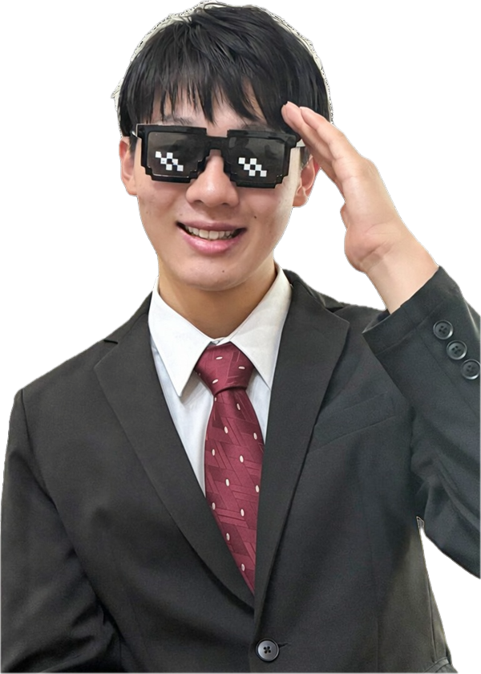

N HIGH SCHOOL ELECTION 2026
生徒会予算を、1000万から、1400万へ。

佐々木快
N高校 1年 ネットコース 東北地区立候補
はじめまして。N高一年ネットコースの佐々木快(かい)です。中学校では生徒会長でした。
生徒会長として、目安箱を利用しながら校則の改訂や、市長への学校指定バックの廃止など、みんなの意見が実現する生徒会を目指して行動してきました。
今回の選挙で僕が目指すのは、生徒会の予算を増やした前例を作ること と、世界初の高校生基金を作って皆さんに還元すること にあります。
僕ならできるので、ぜひスクロールして、僕に投票お願いします。
N高校生徒会が作られてから、予算はずっと1000万円。
※いずれも各期の生徒会メンバーが任命され、活動をスタートした「その月」の時点での公式発表の生徒数です。
人数が増えてるのに予算がずっと同じなのはおかしいと思った。
なら、
自分で作ろうと思った。
寄付型と投資型の両面で交渉し、基金を設立。
安全性の高いインデックスファンドで長期運用。元本は取り崩さない。
運用益だけで毎年安定的に上乗せ。
運用益だけで、現在の予算の 40%相当 を毎年安定的に上乗せ。
生徒会予算
+400万円 / 年
基金があれば、磁石祭はこう変わる。
磁石祭 合計予算
0万円 ＋ 協賛磁石祭は、もっと大きくできる。
交通費支援も、もっと大きく。
1億円の基金からの運用益400万円が"毎年"上乗せ。
さらに企業協賛が別枠で入る。
ルールも、予算も、決めるのは生徒。
職員の役割は「助言」まで。
職員の介入を、生徒が見張る
職員の意見は"参考"。決定権は僕たちに
「前例がない」で、止めない
作るのは、僕たちだ。
今のN高には、生徒会のルールや予算を変える"道すじ"がない。
だから、まず監視する仕組みから作る。